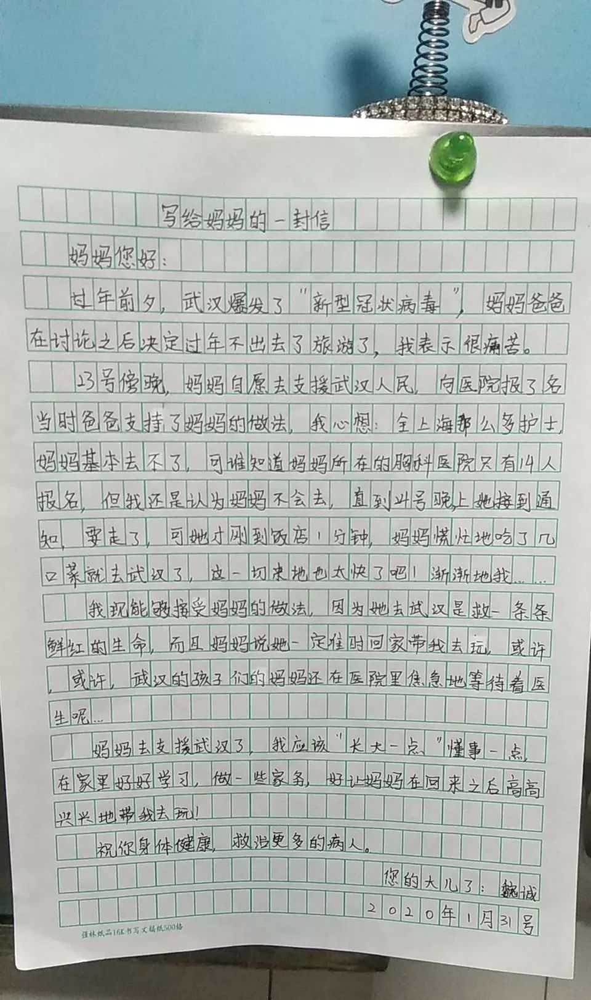
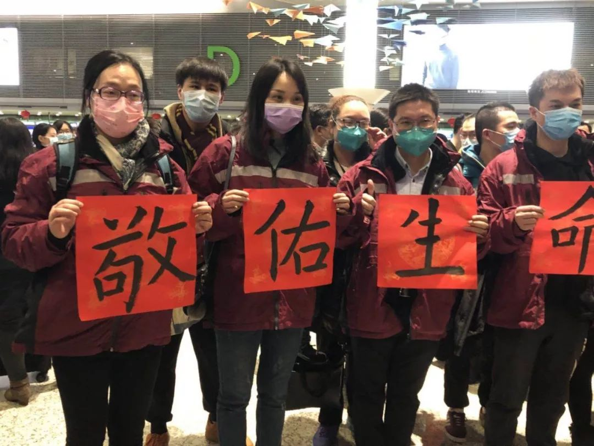
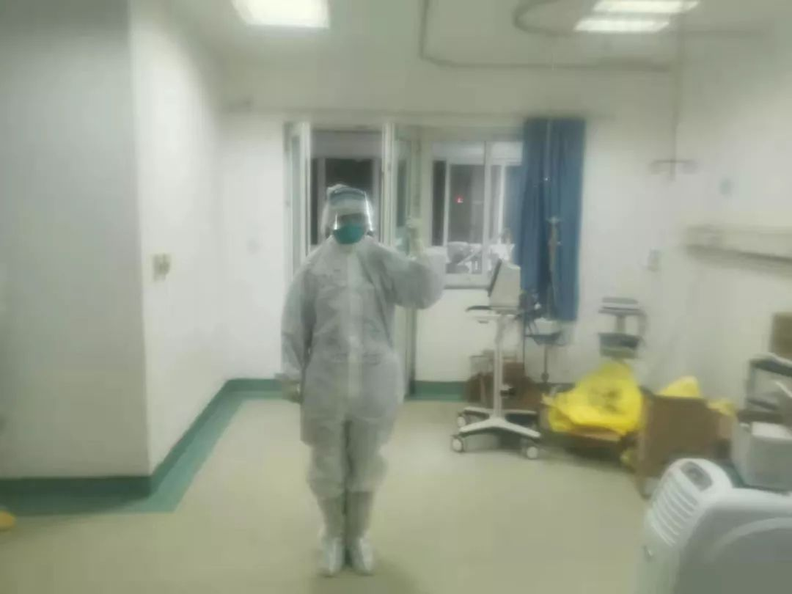
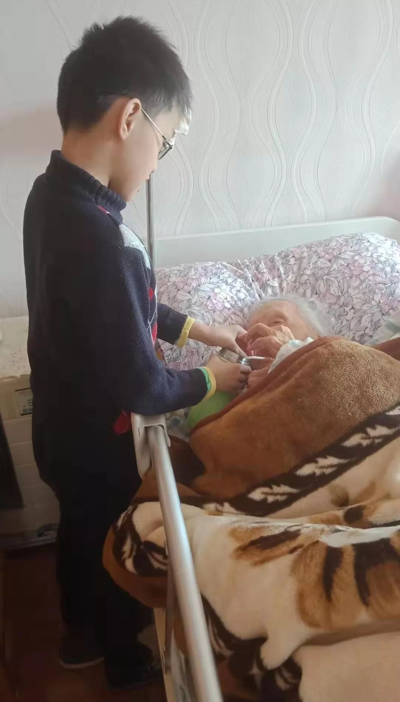

疫情危机中不被看见的人们：武汉周边城市百姓的自救行动
原文链接 备份链接 新型冠状病毒疫情像是一场突如其来的阴霾，在这个冬天笼罩了华中大地。相较于最受关注的武汉市民，周边城市的人们，像是处在阴霾边缘，遭受侵袭，却又不常被看见。面对重重困难，孝感、黄冈、黄石、信阳、荆州、天门……各个城市的百姓 …

感觉他长大了，希望他会理解我的行为，也希望我的行为能引发他对未来的思考，学习是为了什么，将来想要成为怎样的人。
记者 | 应 琛
“过年前夕，武汉爆发了‘新型冠状病毒’，妈妈爸爸在讨论之后决定过年不出去旅游了，我表示很痛苦。后来妈妈自愿去支援武汉，我心想，全上海这么多护士，她基本去不了。但她接到通知要走了，年夜饭才吃了几口菜，这个决定也太快了。但现在我能够接受妈妈的做法，因为她去武汉是去救一条条鲜红的生命……”

受访者供图
这是12岁的魏诚给身处武汉救援一线的妈妈写的一封信。虽然很想念妈妈，但魏诚说，妈妈在武汉支援，他应该“长大一点”，懂事一点，在家好好学习，做一些力所能及的家务。不过，最后魏诚还是露出了“孩子气”的一面，他在信中写道：“这样妈妈回来后，才能高高兴兴地带我出去玩。”
魏诚的妈妈冯亮是上海市胸科医院胸外专业病房的护士长，作为上海首批支援武汉医疗队的成员，如今的她在武汉金银潭医院北三病区，救治一些危重症的病人。
接受《新民周刊》采访时，冯亮的声音带着明显的疲惫。她告诉记者，自己还没来得及看儿子的信，“今天虽然休息，但去帮忙同事接收了一批援助物资，刚刚忙完”。
没有犹豫，因为武汉需要我们
冯亮是在小年夜的下午四点半，看到群里征集援助武汉志愿者的信息。“我当时知道武汉因为这次疫情已经封城了，等于到了一个挺严重的状态，肯定缺大量的医生护士。”冯亮的第一反应就是“我要去”，她立即征询了身边老公的意见，“我老公当时可能还不清楚疫情的具体程度，就让我去了”。
从接到通知到截止报名只有短短半个小时，而当时医院已经处于放假的状态，冯亮觉得有人可能没有及时看到信息，她预感自己会被选上。于是当晚，她就去超市买了一些速冻食物囤着。她又分别去了妈妈和姨妈家，给他们送了一些准备的年夜饭菜和红包，并交代了一下情况。
果然，第二天，冯亮就接到了领导的电话，让她准备一下，但具体出发时间未定。她赶紧收拾了行李。晚上6点多，原本定好在饭店吃年夜饭的一家人才刚到齐，冯亮就又接到了马上要出发的电话。简单打过招呼后，她匆匆吃了两口冷菜，便赶回家中。

受访者供图
当晚，由136名医护人员组成的上海首批医疗队正式从虹桥机场出发。
2003年非典时，冯亮还是个刚刚参加工作近一年的小护士，并没有机会参与到一线的救援工作。但因为是第一次经历这么重大的疫情，她至今仍保留着当时医院发的一个厚厚的棉布口罩，“而这次我有机会可以去了，作为医护人员，就是本能的反应，没有犹豫过。尤其是看到武汉的同行很辛苦，觉得他们需要我们”。
冯亮的老公倒是有些“后悔”了。“大年夜他就问我能不能不要去。”冯亮说，其实老公只是担心她，全家人都非常支持她的决定，“老公还跟我保证，我在前线支援，他搞好家里的后勤保障，照顾好两个孩子，让我没有后顾之忧”。
我们坚持一下，绝不降低护理标准
到达武汉宾馆全部安顿好已是1月25日早上5点。当天冯亮被排到了晚班，原本是晚上12点交接班，但因为到岗第一天需要熟悉流程和环境，晚上10点，冯亮和同班的同事就到了医院。本地的护士简单地介绍了病区的情况和操作规范，换上防护服的冯亮就正式接手了。
冯亮告诉记者，来武汉之前就已经听说了医院有超负荷工作的情况，“像给我们指导的护士，白天也在新建的病区帮忙，晚上又和我们一起上了夜班，等于是没有休息”。
起初，冯亮他们是按照上海的方式是采用三班倒，但后来大家觉得，这样的疲劳战不能长久，就对排班进行了调整。
“我们这里暂时是6个小时一班，分成4班，每班进到病房直接护理病人的有8个人。外围的话晚上有两个，白天保证三四个。”冯亮说，“后来领导建议能不能换成4个小时一班，怕我们在里面时间太长。但问题是物资其实还是比较紧张的，如果增加班次等于要多16套防护装备。因为我们不可能减少每班的人数，不然护理质量肯定就达不到上海对护理病人的质量的要求。”
冯亮告诉记者，危重病房里没有护工，病人所有的治疗和吃喝拉撒都是由护士来承担，很多病人还伴有腹泻的症状，“我不可能一边帮病人做治疗，一边再给他倒扁马桶，这样也不符合无菌的原则”。

冯亮在病房穿着厚重的防护服 受访者供图
虽然在冯亮负责的病区，物资并没有网传的那么紧缺，更没有到了需要医护人员自己diy护具的地步，“那些都是谣言，如果没有正规的防护服，医院也不会让我们进病房的”，但其实物资还是相对有限的。
“因为我们面对的病人病情比较重，进去的护理人员比较多，物资就会比其他地方消耗多一些。”冯亮说，虽然中间可以从病房出来，但这样就浪费一套防护服了，“工作的六个小时，我们基本上是不喝水的，可以坚持不出病房”。

长时间戴着护目镜，在医护人员的鼻梁和面部留下了深深的压痕，甚至是压伤 图片来源于网络
事实上，穿着厚实的防护服，戴着口罩、帽子、护目镜是非常闷热的。“光是穿脱就要一些时间，很多照片里医护人员脸上的压痕也都是经常会有的，我们叫它压创。”冯亮说，尤其是男孩子更容易出汗，“我们一个男同事，下了班，汗水是可以直接从鞋子里倒出来的”。
也正是因为有了充分的防护，至今，上海医疗队所在的病区并无一例医护人员感染的情况。

而一切辛苦都是值得的，冯亮说，每当看着危重病区的患者有好转转出，是他们最欣慰的时刻，“就是在心里觉得我们的付出还是起到了一定的作用”。
不愿和家里通话，怕情绪绷不住
来武汉一个多星期的时间里，冯亮说，只和家里打过一次视频电话，平时更多是通过文字和家里联系，“就是比较想小孩，打电话的话可能会有一点点情绪上的失控”。
某天工作间隙，同班的男护士问冯亮回去后第一件事想做什么，她脱口而出：“抱着儿子狂亲一顿。”但转念一想，又不行，还得隔离一段时间。冯亮说，当时说到这里眼泪已经在眼眶里打转，“这个话题就没有继续下去，因为不能哭，护目镜会起雾，而且流眼泪的话，也可能会有污染。”

冯亮的小儿子魏鸿也会做事了，给太太热饭，喂太太喝水 受访者供图
后来冯亮在吃饭的时候，继续了这个话题，她问了那个男同事他回去第一件事要做什么。“他回答我说想去吃火锅，因为吃火锅的时候是比较热闹的，就是一堆人围在一起，有吃年夜饭的感觉。其实我觉得他也是有点想家了。”说到此处，冯亮有些哽咽。
稳定了情绪之后，冯亮又聊回了工作。她说，之后他们会研究出更合理的排班，来保证医护人员足够的休息，“只有我们休息好了，才能更好地护理病人”。
采访结束的当天，冯亮给记者发来了微信，她说儿子的信后来她看了，“感觉他长大了，希望他会理解我的行为，也希望我的行为能引发他对未来的思考，学习是为了什么，将来想要成为怎样的人”。
两个儿子录了视频让冯亮放心
“有了这样的榜样，魏诚和魏鸿一定不会辜负你的期待。”记者给冯亮回了微信。
征集令
《新民周刊》现面向全国征集新冠肺炎采访对象和真实故事：
如果你是参与抗击新冠肺炎疫情的医护人员或其家属，我们希望聆听你的“战疫”故事，也希望传达你的诉求。
如果你是确诊、疑似患者本人或家属，我们希望了解你和家人如何“抗疫”的过程，让外界了解你的真实经历。
如果你是疫情严重地区的普通市民，我们希望展现你的乐观，并倾听你所需的帮助。
如果你是公共服务人员或各类捐助者，我们希望看到你的“最美逆行”，记录下你的无私。
……
抗击新冠肺炎疫情，我们诚征对疫情了解的社会各界人士，提供相关线索，说出你的故事，让我们用新闻留存这一切。
《新民周刊》新冠肺炎线索征集值班编辑联系方式（添加时请简要自我介绍）：
周一：应 琛 微信号：paulineying0127
周二：金 姬 微信号：gepetta
周三：黄 祺 微信号：wxid_bf5mudid7oz322
周四：周 洁 微信号：asyouasyou
周五：孔冰欣 微信号：kbx875055141
周六：吴 雪 微信号：shyshine1105
周日：姜浩峰 微信号：jianggeladandong
新闻是历史的底稿，你们是历史的见证者。期待你的故事、你的线索！

▼
大家还都在看这些
▼
转载请在评论区留言，获得授权！
转载时，须注明作者、出处和微信号


原文链接 备份链接 新型冠状病毒疫情像是一场突如其来的阴霾，在这个冬天笼罩了华中大地。相较于最受关注的武汉市民，周边城市的人们，像是处在阴霾边缘，遭受侵袭，却又不常被看见。面对重重困难，孝感、黄冈、黄石、信阳、荆州、天门……各个城市的百姓 …
原文链接 备份链接 拥有1000张床位的火神山医院今天开始接收病人，主要救治确诊患者。 1400位来自军队的医护人员已经抵达，院长张思兵大校是SARS防治专家。 拥有1600张床位的雷神山医院预计2月5日完工。 两家医院投入使用一 …
原文链接 备份链接 疫情爆发以来，武汉市公交、地铁系统相继停运，加之私家车禁行，这座一千万人口的巨型城市，在短时间内，迅速从喧嚣中沉寂下来。曾经繁华、拥堵的武汉街头，如今显得空荡而寂寥。 但仍有一群人活跃在武汉的路面上，他们穿上全身防护 …
原文链接 备份链接 口述 |武汉市肺科医院ICU主任 胡明 采访 |潇湘晨报记者 耿志方 温艳丽 廖如云 记录 |实习生 赵鸿婕 朱文静 杨丽英 谭思慧 林颖娴 对于胡明来说，他根本没空看疫情的新闻，哪怕是春晚，除夕和初一都没来得及在同事 …
原文链接 备份链接 1月30日，曾患新型冠状病毒感染的肺炎的北京大学第一医院呼吸和危重症医学科主任王广发在北京地坛医院治愈出院。他是北京市第5名治愈出院的新型冠状病毒感染的肺炎患者。新华社发（任超 摄） 采访·整理 秦珍子 编辑 张国 国 …